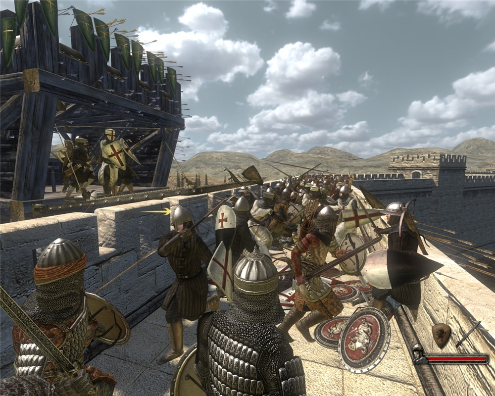
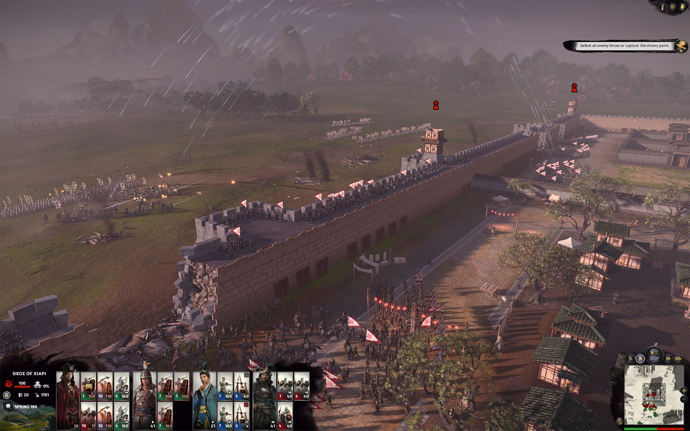
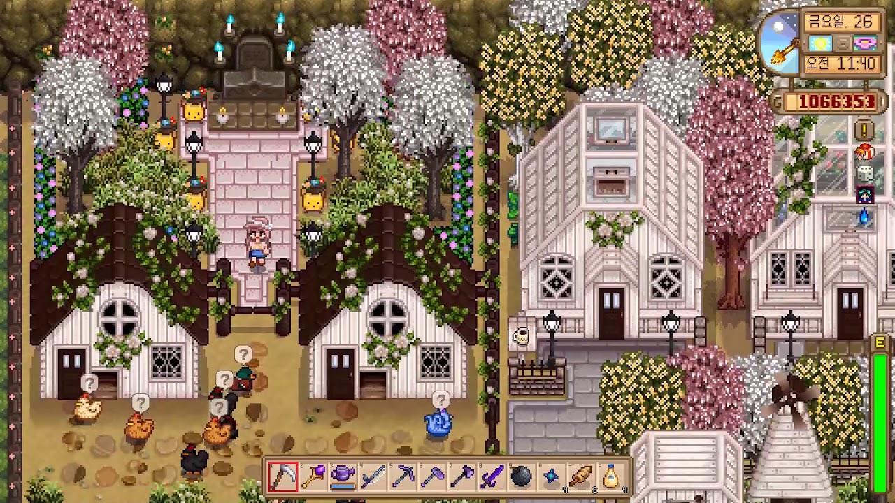
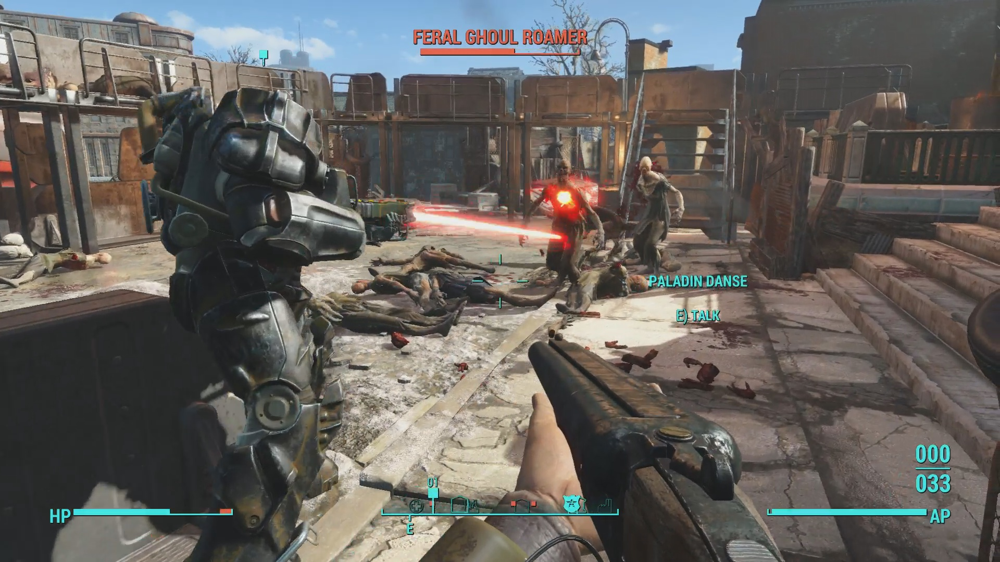
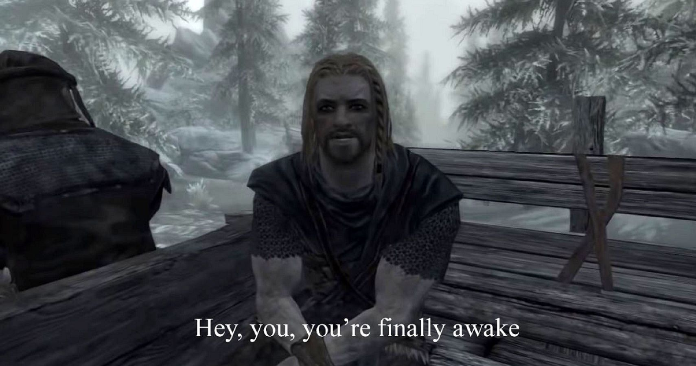

"심시티, 스카이라인과 같은 아기자기한 건설과, 대항해시대의 모험을 동시에 체험할 수 있는 수작"
시나리오 모드와 사용자정의 모드 중 한 가지를 골라 게임을 진행할 수 있다. 주민들의 생활수준을 향상시킬 수록 더 높은 티어의 건물과 함선으로 업그레이드가 가능해지고, 다른 세력과의 교역으로 필요한 자원과 자금을 확보해야 한다.
"중세시대 영주가 되어보자"

FPS와 RPG적 요소가 중세시대 장르로 융합되다. 터키의 영세한 스튜디오에서 개발된 명작. 서서히 세력을 늘려 영주가 되어가는 과정에서 마치 내가 기사 윌리엄이 된 듯한 느낌을 받는다.
RTS의 새 지평을 연 게임시리즈

수백에서 수천, 수만에 달하는 병력을 직접 지휘할 수 있어 그 스케일에 압도된다. 단, 그 만큼 컴퓨터의 램과 CPU성능이 뒷받침 되어야 한다는 것은 흠. 고질적인 턴렉과 전투시의 프레임저하 문제는 모두가 포기했다! 그럼에도 불구하고 여전히 명작중의 명작으로 평가받는다
"나의 고물 컴퓨터로 무리없이 즐길 수 있는 귀농생활"

그래픽 자체가 뛰어나다고 볼 수는 없지만, 그렇기에 컴퓨터사양에 구애받지 않고 즐길 수 있다. 아기자기한 게임 구성과 나름 탄탄한 스토리 전개로 현재까지 많은 유저들의 사랑을 받는 명작! 단! 한국유저들은 유유자적한 플레이보다는 격렬한 플레이를 선호하는 듯하다!
"과연 베데스다의 유작이 될 것인가?"

높은 게임 자유도와 탄탄한 스토리, 하다가 지칠정도로 넘처나는 미션들로 하루 이틀 밤샘은 우숩게 보일 정도. 또한 다양한 모드들을 적용할 수 있어, 발매 후 5년이 지난 지금도 꾸준히 사랑받고 있는 명작중의 명작.
다만, 이후 나온 폴아웃76등의 삽질로 명성에 흠을 남겼다. 포스트 아포칼립스 장르의 바이블 같은 존재!
"도바킨!! 도바킨!!"

설명이 필요없는 명작. 이 게임 또한 베데스다에서 개발하여 2011년에 발매되었다. 발매 당시 미친듯한 자유도와 그래픽으로 게임계에 큰 충격을 주었다. 이후 발매된 오픈월드 형식 게임의 원형이라고 봐도 무방하다.
탄탄한 스토리는 물론이고 수많은 모드들을 적용할 수 있어서, 작성자도 최근까지 자주 플레이했었다. 이 게임은 '바닐라가 커피라면 모드는 TOP야'라는 말이 나올 정도로, 모드적용이 거의 필수가 되다 시피한 게임이다.
특히 캐릭터들의 외모를 아름답게(?) 수정해 주는 모드들이 많은데, 바닐라를 플레이해 봤다면 왜 그런지 이해할 것.... 이후 엘더스크롤6가 나온다고 하던데 기약이...